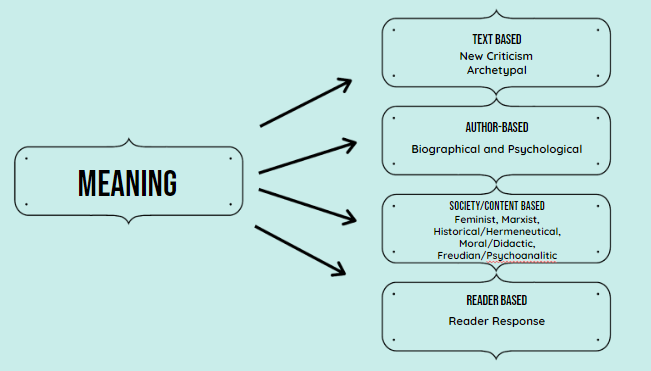

|
Here are the different literary theories based on text, author and society/context. We have covered the first 4.  |
|
Reader Response Theory This theory focuses on how the reader perceives the text instead of what the author intends. The text itself has no meaning until a reader reads it. Select each item to learn more. Applying the Reader Response Theory
Applying the Theory to “Cinderella”
|
|
Reader Response Theory This is the easiest out of all the theories. There is no right or wrong answer because what matters is your understanding of the text. Your purpose is to examine, explain and defend your reaction to the text. Select each item to learn more. DO
DO NOT
Steps For Writing The Reader Response Essay Tabs Select each item to learn more.
Choose the Text to Study Be sure to read it closely so you can truly connect with it. Write the Introduction Make sure that you mention the title of the work, the author, and your central thesis. Answer These Questions for the Body
Wrap it All Up in the Conclusion
|